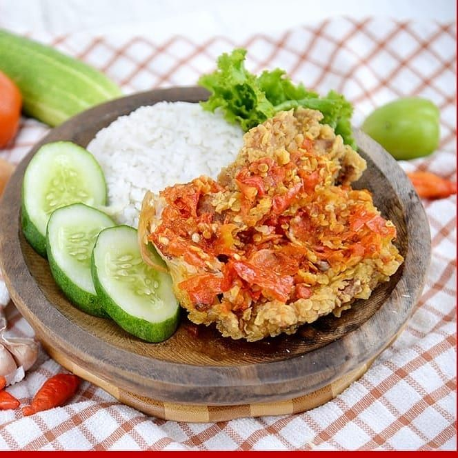

Ayam Geprek

Ayam geprek is a popular Indonesian dish consisting of fried chicken that is crushed or smashed, then topped with a spicy sambal (chili sauce). The chicken is usually crispy on the outside and tender on the inside, and the level of spiciness can be adjusted to taste.
Ingredients
Crispy Chicken
- Dry batter: ½ pack of Sasa Kentucky-style seasoned flour (225 grams)
- Wet batter: 6 tablespoons of Kentucky-style seasoned flour + cold water (1:2 ratio)
- 500 grams of chicken meat, cleaned and cut to preference
- Enough cooking oil for frying
Sambal Geprek
- 10 bird's eye chillies
- 5 shallots
- 3 garalic cloves
- 1/2 teaspoon sugar
- 1/2 teaspoon salt
- MSG Powder
- Water as needed
Steps
Crispy Chicken
- Coat the chicken in the dry batter, then dip it into the wet batter, and coat it again with the dry batter.
- Press and squeeze the chicken to ensure it’s well-coated.
- Prepare a pan and heat the oil over medium heat.
- Fry the chicken until it turns golden brown and crispy.
- Drain the chicken on paper towels to remove excess oil.
- Place the chicken on a serving plate.
Sambal Geprek
- Finely slice all the ingredients (bird's eye chilies, shallots, and garlic).
- Mash all the sliced ingredients until smooth.
- Heat some oil in a pan.
- Add the mashed ingredients into the pan and sauté until fragrant.
- Add enough water and stir well.
- Add salt, sugar, and MSG powder (Sasa). Adjust the seasoning to taste.
- Remove from heat and serve. You can enjoy the crispy chicken with sambal geprek as you like!